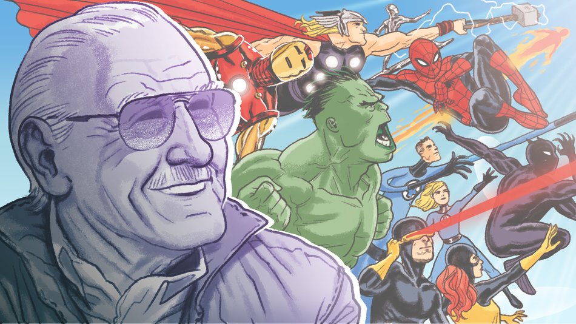

Bienvenue sur le site préféré des enthousiastes de Marvel

Que peut-on faire sur ce site ?
Ce site offre à nos chers fanatiques de Marvel des moyens ludiques pour en apprendre davantage sur leurs personnages préférés.
Nous vous proposons trois types de visualisations :
- Un graphe permettant de visualiser les réseaux sociaux de certains personnages, avec possibilité de naviguer de manière intéractive dans le graphe.
- Une visualisation moderne et paramètrable "WordCloud" qui donne la possibilité d'avoir le réseau sémantique caractéristique d'un personnage.
- Un graphe intéractif mettant en valeur l'évolution temporelle de la popularité de certains personnages.
Choisir deux personnages Marvel et naviguer leurs réseaux sociaux pour voir s'ils se croisent ? Comparer les champs lexicaux caractéristiques de vos héros préférés ? Se pencher sur la popularité des superhéros en étudiant simultanément leurs croissances au fil des années ? Vos désirs les plus profonds deviennent réalité grâce à notre site qui vous offre ces possibilités et bien plus !